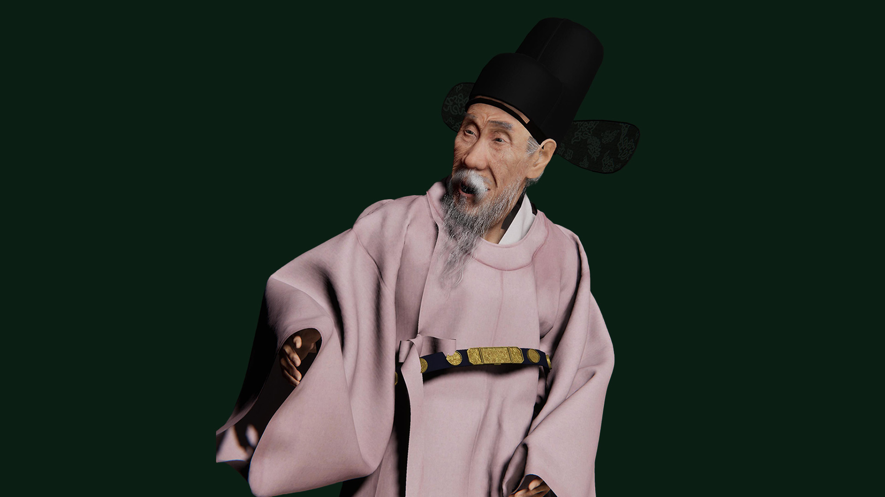
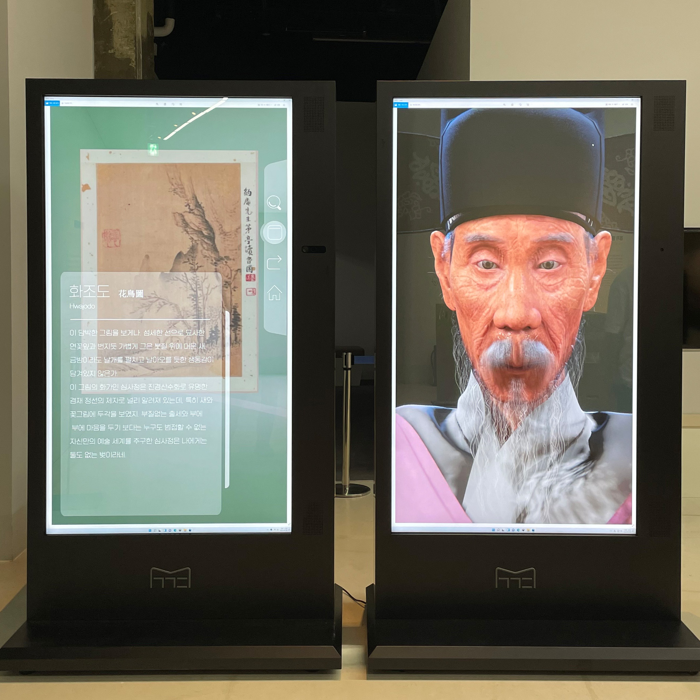

01 Reconstruct the character
Translate historical portrait reference into a believable 3D identity.
A custom historical character, including facial deformation, hair and clothing, integrated into a public-facing runtime.

Historical portrait references had to become a riggable, expressive real-time person. This required controlled mesh topology, facial deformation, surface lookdev, hair and garments, and reliable playback in a visitor-facing interactive application.
I worked across ZBrush / Maya reconstruction, controlled UVs and character deformation, approximately 256 custom facial blendshapes documented in the production archive, Python-assisted ARKit-style data mapping, hair and Hanbok cloth, and Unity HDRP animation and interaction integration.
Translate historical portrait reference into a believable 3D identity.
Set up meshes and UVs suitable for rigging and expression work.
Author and integrate a custom blendshape system with ARKit-style performance input.
Prepare skin, eyes, hair, beard, costume and performance for real-time presentation.
Connect animation and interaction cues in the Unity HDRP museum application.


Facial readability is controlled by topology and the shape set as well as by animation.
The input format and custom facial shape inventory must be made compatible to produce a coherent response.
The completed character belongs in the visitor-facing application rather than remaining a turntable render.
This is a Unity HDRP deployment, not an Unreal Engine 5 project. It contributes evidence of custom rigging and facial animation, but cannot be presented as UE5 Animation Blueprint or MetaHuman production experience.
See also: original, expanded project archive ↗